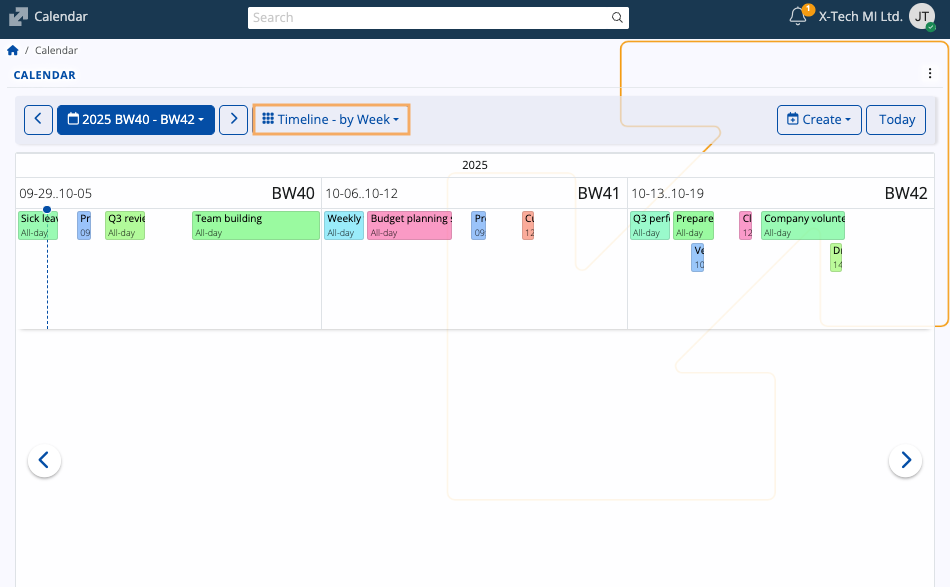

Calendar
The ERP.net Calendar is a powerful time-management tool, allowing you to efficiently organize, monitor and synchronize your events and tasks. Its features include previewing and creating activities, applying different views, navigating across various time periods, as well as accessing any type of scheduled event easily.
It also sums up group activities from the social groups you take part in.

Interface
Views
The Calendar has several views allowing you to narrow down your activities to the ones you have for the current day, week, or month(s), or even see them spread across the year's quarters.
You can change your view at any time by clicking the respective dropdown menu and selecting one of the other views.

Alternatively, you can do so from the three-dot menu at the upper-right part of the page.

Month
By default, the Month view is applied, showing the days of the current month in squares fitting the activities in each.
Each week is labeled with its corresponding Business Week (BW) number.
Workweek
The Workweek view lists all activities for all days of the current week.
Each week is labeled with its corresponding Business Week (BW) number.

Timeline
The Timeline view focuses on continuity across multiple time spans.
It allows you to track activities over longer periods of time and in a linear format, offering visibility of overlapping or consecutive activities.
There are several timeline modes available:
Timeline – by Day – Displays all activities for a single day, as well as the activities for the next 11 days.

Timeline – by Week – Shows all activities for the current as well as the next six weeks. Each week is labeled with its BW number.

Timeline – by Month – Lists all activities for the current as well as the next six months.

Timeline – by Quarter – Presents all activities for the last three months (current quarter), as well as the next three quarters.

Navigation
Regardless of the Calendar view, using either the left (previous) or right (next) arrows in the navigation bar, you can navigate across quarters, months, weeks and days. This allows you to revisit past activities or preview incoming ones.

The arrows within the Calendar itself move forward or go back by a single day in Month view and by a single period in Timeline view.
For example, pressing the right arrow advances one business week in Timeline - by Week, shifting all the weeks following it by one.

Date picker
You can navigate to a specific week or month from the blue-colored menu.
Use the date picker to select any given date, month, or year.
If you've navigated too far away and wish to quickly go back to the present date, simply click Today.

Business Week number
The Calendar follows the ERP.net Business Week (BW) standard for numbering weeks in a calendar year. This standard is based on ISO 8601, but it applies specific improvements to:
- ensure weeks always align with their calendar year
- prevent confusion in reports or documents where dates at the beginning or end of a year may be assigned to a different year.
Here are the two key differences:
| Month | ISO 8601 | Business Week |
|---|---|---|
| January | The first 1–3 days of January may belong to the last week of the previous year (e.g. 01.01.2027 → ISO 53/2026) ⚠️ | These days are assigned to week 0 of the current year (e.g. 01.01.2027 → BW 0/2027) ✅ |
| December | The last days of December may belong to Week 1 of the next year (e.g. 31.12.2018 → ISO 1/2019) ⚠️ | These days remain in the final week of the current year (e.g. 31.12.2018 → BW 53/2018) ✅ |
The BW number always reflects the actual calendar year of the date. This avoids mismatches across year boundaries, ensures chronological order, and keeps all documents and reports from a given year grouped correctly.

Monthly and weekly labels
Within the Calendar, you can see each week labeled with its corresponding BW number, which stands for "Business Week number".
In Workweek view, this label is positioned at the upper-left corner of the Calendar.

In other Calendar views as well as navigators making use of the date picker, you will also find BW labels for convenience.

Note
All ERP.net navigators with time-based columns like Document Date support business week grouping, which allows you to group any records of documents by the business week they were created in.
Activities
Your activities are summarized and displayed within the Calendar, with their titles fitting into the respective time slots.
Details
If you hover the mouse over an existing activity, you can see more details about it in a tooltip.
This includes the Subject, time range, Responsible Party, Target Party, and Document Type.
If participants are included, up to the first three will be listed under a dedicated "Participants" section.
In Month view, the starting time of an activity is always shown to the left of its title.
You can also see a list of all activities for a given day by clicking the circular button at the top-right corner of a date.

Scope of activities
As a general rule, the Calendar shows you all activities where you are designated as the Owner, Responsible Party or a Participant.
The Calendar will also display activities from social groups you take part in. You once again need to be either the Owner, Responsible Party or a Participant. If you're neither of those, you will still see the actvities but only within the group-integrated Calendar.
Create an activity
To add a new activity from scratch, click on a date and press the Create button.
It will expand a dropdown with several activity types.

Once you make your choice, you will be taken to the Activity document form where you need to fill out all the necessary fields regarding the activity and individuals who may be involved in it.
These fields also serve as crucial piece of data that will appear in all potential participants' Calendars.
Edit an activity
You can open any activity document by clicking on its title. Inside, you can edit the subject, date, participants or any other information.
When done, you need to once again click Save and reload. Your changes will be immediately reflected in your Calendar.

Tip
The Calendar is not tied to one specific location.
Apart from being able to interact with it in a group-specific context, you can also integrate it as a panel in the Dashboard.
Note
The screenshots taken for this article are from v.26 of the platform.